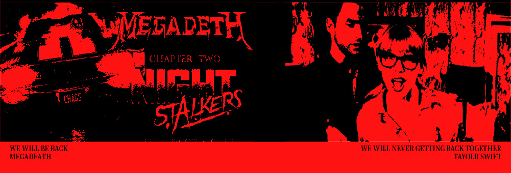
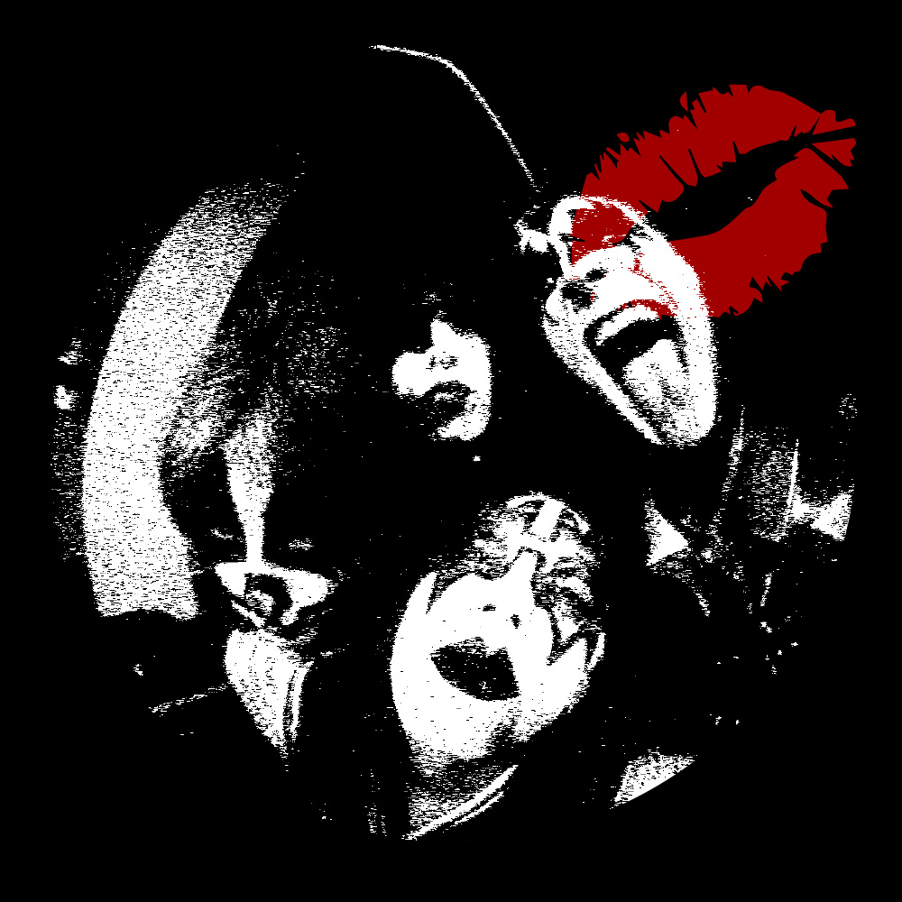

Track1
MEGADEATH between TAYOLRSWIFT
WE will Are never Ever
getting
Be back Together
첫 번째는 도어즈의 사장님이다.사장님의 가장 큰 고민은 본인이 듣고 싶지 않은
노래를 손님이 신청했을 때 어떻게 해야할 지 라고 한다.
“여기는 락 LP를 틀어주는 곳입니다. 요즘 대중가요는 틀어주지 않습니다.” 라고
단호하게 말씀하시지만 가끔 단골 손님들끼리만 있을 때는 조용히 테일러스위프트의 음악을 틀고 따라 부르신다.
Track2
There is nothing free beer in this world

두 번째로 소개할 인물은 나에게 짧고 강렬한 인상을 준 분이다. 평소처럼 도어즈에 있던 날.
이미 술에 거하게 취하신 여성 두 분이 들어오셨다. 두 분은 갑자기 내게 “합석하실래요? 술 사드릴게요.”
라는 합석제안을 하셨다. 속으로는 공짜 술? 당장 가야지 ㅋㅋ 라고 생각했지만, 아무래도 1초만에
좋아요라는 답변은..nahhh.그래서 잠깐 고민 하는 척 후 합석했다.그 분들은 나에게 별 이야기를 다 하다가 갑자기 아련한 눈으로 날 보더니…
갑자기 내게 뽀뽀를 했다 Shit!
내가 아무리 열려있다고 해도 처음 본 동성에게 뽀뽀를 당하니,유쾌한 기분이 아니었다.
놀란 표정으로 쳐다보니,급하게 계산 후 자리를 떠났다.역시 세상에 공짜는 없는 걸까…
뽀뽀 한 번에 맥주 2병이라니.가성비 좋은건가?
Track3
Shall we dance?

세 번째로 소개하실 분은 도어즈 2의 사장님이다. 도어즈 앞, 길을 하나만 건너면 되는데 길 한복판에서 어떤 할아버지가 열심히 무반주로 춤을 추고 계셨다. 나는 이 분에게는 눈도 마주치면 안되겠다라는 본능적인 직감이 들었다. 그래서 최대한 리듬게임 하듯 할아버지가 춤추며 턴을 도실 때에 맞춰 그 분 시야 사각지대로 슬금슬금 움직였다.
하지만..갑자기 할아버지는 흐름상 턴할 타이밍이 아닌데 엇박 댄스를 시전하셨고,나는 딱 정면으로 할아버지를 마주하게 되었다.역시나 그 분은 날 보시고 같이 춤 제안을 하셨다. 나는 무해한 미소를 짓고 거절 후 빠른 걸음으로 도어즈 2로 향했다. 잘 쉬고 있었을 그 때 사장님 오셨다는 말과 함께 아까 길에서 본 댄싱머신 할아버지가 들어오신 게 아닌가!
오마갓.
후 도어즈2에서 더 도어즈의 대표곡 'light my fire'가 나오는 순간, 역시나 또 나오는 사장님의 댄스본능. 이미 한 번 잘 못 찍힌 나에게 또 다시 사장님은 쉘 위 댄스? 를 제안하고 나는 또 거절했지만 사장님은
나에게 그 엇박 댄스를 가르쳐주셨다.
Door lock
우연히 가게 된 도어즈는 나에게 오아시스 같은 곳이다.
대화에서 잔잔한 위로를 얻기도,혹은 인생에서 춤을 추는 법을 배우기도 한다.
만남 후에는 대부분 서로의 이름도, 연락처도, 다음에 또 만날 수 있을 지, 없을 지도 모른 채 헤어진다.
하지만 항상 대화를 마치고 집에 가기 전, 진심을 담아 다음에 또 만나요.라는 말을 하고 나온다.
여기까지 내가 만난 도어즈의 인연들을 소개해봤다. 어떤지? 혹시 오고 싶은 마음이 드는지?